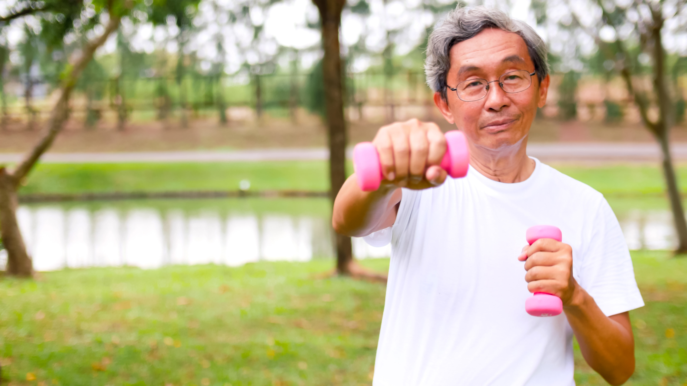

How To Stay In Shape
There are many you can do to stay in shape. It isn't just something that will benefit you physically but also mentally. But you are more likely to stick with something that you enjoy and that suits your own abilities. Before starting something its best to start off slow. Then start slowly increase the intensity of your exercise.
But if you don't want to involve yourself in a sport. Even something as simple as walking. 3 hours of walking a week already improves your health and endurance. Drink plenty of water before, during, and after your workout session, even if you don’t feel thirsty. This can help you stay hydrated. Join a class or a club that offers activities for older adults. Invite your friends or family to join you.
